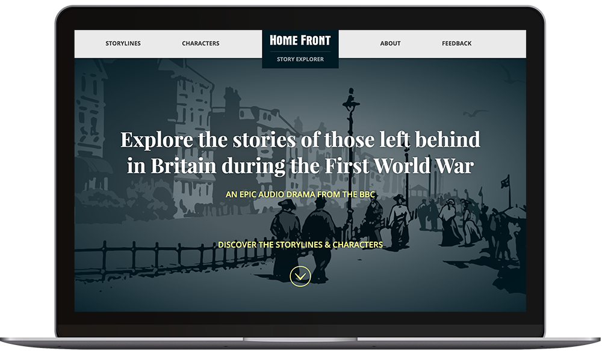

BBC
The BBC has developed a platform called the "Story Explorer" to help catch-up on previous seasons of a drama. They wanted to find out if:
As a UX consultant at System Concepts, I:
I was the lead researcher on this project, and was assisted by another consultant.
We chose to run a diary study so we could get a glimpse of users' behaviours over a longer period of time, which was essential to answer the key research question around whether the platform could really be useful while following the show. The test site for the Story Explorer platform had been built around a radio drama called Home Front, whose new season was about to air for 2 weeks, with 1 episode broadcast every day. We planned the diary study so it would coincide with this new season. 14 participants were recruited, with a mix of people who were already listening to the dramas, and people who were about to start following it.
Once the initial planning stage was over, I started diving into the preparation for the study and:
Once I had met the participants during the briefing sessions, the actual diary study began. I monitored participants' diary entries and sent them questions and prompt when needed. In parallel, I worked on the discussion guide for the follow-up interviews.
After 14 days, I selected the participants who had contributed the most interesting diaries and invited them to take part to follow-up interviews. During the interviews, I went back over some of the things they wrote about in their diaries, and asked them to complete tasks to explore features that hadn't been naturally discovered.
The study: